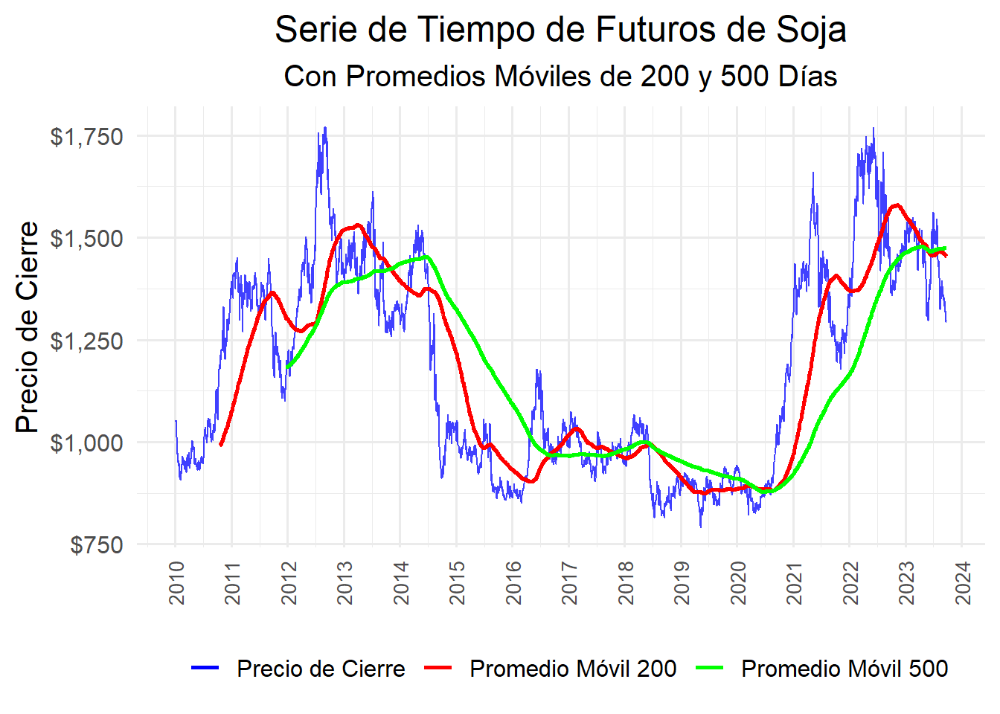

Chapter 6 Promedio Movil
Cuando aplicamos un promedio móvil a una serie de tiempo, cada punto de la serie transformada (promediada) es el promedio de un número determinado de puntos anteriores, actuales y futuros de la serie original. Este número de puntos que decides promediar se llama “ventana” del promedio móvil.
# Cargar la biblioteca quantmod
library(quantmod)
# Especificar el símbolo para futuros de soja
symbol <- "ZS=F"
# Descargar los datos históricos desde el 1 de enero de 2010 hasta hoy
getSymbols(symbol, from = "2010-01-01", to = Sys.Date(), auto.assign = TRUE)## Warning: ZS=F contains missing values. Some functions will not work if objects
## contain missing values in the middle of the series. Consider using na.omit(),
## na.approx(), na.fill(), etc to remove or replace them.## [1] "ZS=F"# Crear un data frame con la serie de tiempo
soybean_data <- data.frame(Date = index(get(symbol)),
Open = Op(get(symbol)),
High = Hi(get(symbol)),
Low = Lo(get(symbol)),
Close = Cl(get(symbol)),
Volume = Vo(get(symbol))
)
# Eliminar filas con valores NA
soybean_data <- na.omit(soybean_data)
# Muestra los primeros registros del data frame
# head(soybean_data)# Cargar la biblioteca xts
library(xts)
# Crear una serie de tiempo xts a partir del data frame soybean_data
soybean_xts <- xts(soybean_data[, -1], order.by = soybean_data$Date)
# Verificar la serie de tiempo
# head(soybean_xts)## Warning: package 'scales' was built under R version 4.2.3# Convertir el objeto xts a data.frame
soybean_df <- as.data.frame(soybean_xts)
soybean_df$Date <- index(soybean_xts)
# Calcular SMA_200 y SMA_500
soybean_df$SMA_200 <- SMA(soybean_df$ZS.F.Close, n = 200)
soybean_df$SMA_500 <- SMA(soybean_df$ZS.F.Close, n = 500)
# Usar ggplot2 para visualizar los datos
ggplot(soybean_df, aes(x = Date)) +
geom_line(aes(y = ZS.F.Close, color = 'Precio de Cierre'), alpha = 0.75) +
geom_line(aes(y = SMA_200, color = 'Promedio Móvil 200'), size = 1, na.rm = TRUE) +
geom_line(aes(y = SMA_500, color = 'Promedio Móvil 500'), size = 1, na.rm = TRUE) +
theme_minimal(base_size = 15) +
labs(title = 'Serie de Tiempo de Futuros de Soja',
subtitle = 'Con Promedios Móviles de 200 y 500 Días',
y = 'Precio de Cierre') +
theme(axis.title.x = element_blank(),
axis.text.x = element_text(size = 10, angle = 90, vjust = 0.5),
plot.title = element_text(hjust = 0.5),
plot.subtitle = element_text(hjust = 0.5),
legend.position = "bottom") +
scale_x_date(date_breaks = "1 year", date_labels = "%Y") +
scale_y_continuous(labels = dollar_format()) +
scale_color_manual(values = c('Precio de Cierre' = 'blue', 'Promedio Móvil 200' = 'red', 'Promedio Móvil 500' = 'green'),
name = "")## Warning: Using `size` aesthetic for lines was deprecated in ggplot2 3.4.0.
## ℹ Please use `linewidth` instead.
## This warning is displayed once every 8 hours.
## Call `lifecycle::last_lifecycle_warnings()` to see where this warning was
## generated.
Observaciones:
Entre los años 2013 y mediados del 2014 se puede ver cambios en la tendencia de la serie de tiempo de futuros de la soya, tamto para el promedio movil de 200 días, como para el de 500 días el cual es mas marcado.
Entre los años 2021 y mediados del 2023 se puede ver cambios en la tendencia de la serie de tiempo de futuros de la soya, tamto para el promedio movil de 200 días, como para el de 500 días el cual es mas marcado.Se podria llegar a validar por medio de un mayor estudio de este tiempo si la afectación fue causada por el desarrollo de la pandemia del covid-19 la cul inicio en marzo de 2020 e inicio a retrocer en Agosto de 2021 cuando se inicio el uso de las vacunas.
Al suavizar las fluctuaciones menores, a traves de los promedios móviles se logro resaltar las tendencias subyacentes en los datos.